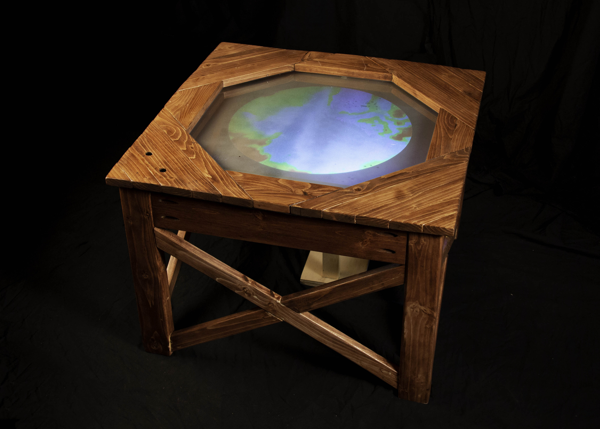

In 1967, Syukuro Manabe and Richard T. Wetherald published a research paper that would become the basis for the modern climate model. Based on their calculations, which were the first to accurately describe surface cooling by atmospheric processes, they concluded that a doubling of atmospheric carbon dioxide would produce about 2°C of warming. Their estimate is still considered accurate.
Business as Usual: 1967-2067 is a projection of surface temperature and sea ice calculated from CESM – a modern climate simulation. Data is drawn from two different versions of the simulation: a "control run" with no human forcing and a "business as usual" scenario that closely matches recent climate conditions.
Edition 2 is presented atop a handmade, wooden light table. Viewers may switch between the "control run" and the "business as usual" scenario with the buttons on the tabletop.

Edition 1 is presented as an interactive projection. By default, the projection shows "control run" data, but when a person gets close, it switches to a "business as usual" scenario.
{kind=link}